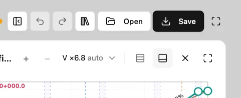
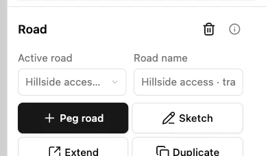

Save and reopen a project
Open the training project in Engineering workbench. The file you save contains the project and its roads, so you can resume editing from it.
1. Open Save & export
Select Save in the workspace header. Save & export opens with the Project file option available.

2. Download the project file
Choose Project file, then select Save in its preview. Keep the downloaded .road.json file. In the example it contains both training alignments.

3. Reopen the saved copy
Close Save & export if it is still open. Select Open in the workspace header, then choose the .road.json file you downloaded.

4. Check the restored road
Confirm the project and active road match the saved copy. In this example, Design shows Hillside access as the active road again.
